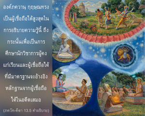

ความรู้สนามแห่งกิจกรรมและผู้รู้กิจกรรมนั้นนักปราชญ์หลายท่านได้อธิบายไว้ในบทความพระเวทต่างๆ ได้แสดงไว้โดยเฉพาะใน เวทานฺต - สูตฺร ด้วยวิจารณญาณทั้งหมดของเหตุและผล

องค์ภควานฺ กฺฤษฺณทรงเป็นผู้เชื่อถือได้สูงสุดในการอธิบายความรู้นี้ ถึงกระนั้น เพื่อเป็นการศึกษานักวิชาการผู้คงแก่เรียน และผู้เชื่อถือได้ที่มีมาตรฐานจะอ้างอิงหลักฐานจากผู้เชื่อถือได้ในอดีตเสมอ องค์กฺฤษฺณทรงอธิบายถึงประเด็นที่ขัดแย้งกันมากที่สุดนี้ ซึ่งเกี่ยวกับปัจเจกวิญญาณ และอภิวิญญาณว่าเป็นหนึ่งดวง หรือสองดวง โดยอ้างอิงคัมภีร์ เวทานฺต ซึ่งเป็นที่ยอมรับกันว่าเชื่อถือได้ก่อนอื่นพระองค์ตรัสว่า “เช่นนี้ตามนักปราชญ์ต่างๆ” เกี่ยวกับนักปราชญ์ต่างๆ นอกจากตัวพระองค์เอง วฺยาสเทว (ผู้เขียน เวทานฺต-สูตฺร) เป็นนักปราชญ์ผู้ยิ่งใหญ่ และใน เวทานฺต-สูตฺร ความเป็นสิ่งคู่นี้ได้อธิบายไว้อย่างดี และ ปราศร ผู้เป็นบิดาของ วฺยาสเทว ก็เป็นนักปราชญ์ผู้ยิ่งใหญ่ ได้เขียนในหนังสือศาสนาของท่านว่า อหมฺ ตฺวํ จ ตถาเนฺย…“พวกเรา ท่าน ข้าพเจ้า และสิ่งมีชีวิต ทั้งหมดเป็นทิพย์แม้อยู่ในร่างกายวัตถุ บัดนี้เราตกลงมาอยู่ในวิถีทางของสามระดับแห่งธรรมชาติวัตถุตามกรรมที่แตกต่างกันไป ดังนั้น บางคนอยู่ในระดับที่สูงกว่า และบางคนอยู่ในธรรมชาติที่ต่ำกว่า ธรรมชาติที่สูงกว่า และต่ำกว่าดำเนินไปก็เนื่องมาจากอวิชชา และจะปรากฏอยู่ในจำนวนสิ่งมีชีวิตที่นับไม่ถ้วน แต่อภิวิญญาณผู้ไม่มีความผิดพลาด ไม่มีมลทินจากสามระดับแห่งธรรมชาติ พระองค์ทรงเป็นทิพย์” ทำนองเดียวกัน ในคัมภีร์พระเวทฉบับเดิมได้กล่าวถึงข้อแตกต่างระหว่างดวงวิญญาณ อภิวิญญาณ และร่างกาย โดยเฉพาะใน กฐ อุปนิษทฺ มีนักปราชญ์ผู้ยิ่งใหญ่มากมายได้อธิบายไว้ และปราศร พิจารณาว่าเป็นบุคคลสำคัญในบรรดานักปราชญ์เหล่านี้
คำว่า ฉนฺโทภิห์ หมายถึง วรรณกรรมพระเวทต่างๆ ตัวอย่างเช่น ไตตฺติรีย อุปนิษทฺ ซึ่งแยกออกมาจาก ยชุรฺ เวท อธิบายถึงธรรมชาติ สิ่งมีชีวิต และองค์ภควานฺ
ดังที่กล่าวไว้แล้วว่า กฺเษตฺร คือ สนามแห่งกิจกรรม และมีสอง กฺเษตฺร-ชฺญ คือ ปัจเจกดวงชีวิต และดวงชีวิตสูงสุด ดังที่ได้กล่าวไว้ใน ไตตฺติรีย อุปนิษทฺ (2.5) พฺรหฺม ปุจฺฉํ ปฺรติษฺฐา มีปรากฎการณ์แห่งพลังงานขององค์ภควานฺ เรียกว่า อนฺน-มย การพึ่งพาอาหารเพื่อดำรงชีวิต เช่นนี้เป็นความรู้แจ้งแห่งองค์ภควานฺทางวัตถุ จากนั้นใน ปฺราณ-มย หลังจากรู้แจ้งสัจธรรมสูงสุดรูปของอาหาร เราสามารถรู้แจ้งสัจธรรมในอาการชีวิตหรือรูปลักษณ์ชีวิต ในชฺญาน-มย การรู้แจ้งขยายไปสูงกว่าอาการชีวิตโดยมาถึงจุดแห่งความคิด ความรู้สึก และความเต็มใจ จากนั้นก็มีความรู้แจ้ง พฺรหฺมนฺ เรียกว่า วิชฺญาน-มย ซึ่งจิตใจ และอาการชีวิตของสิ่งมีชีวิตแตกต่างไปจากตัวสิ่งมีชีวิตเอง ถัดไปเป็นระดับสูงสุดคือ อานนฺท-มย รู้แจ้งแห่งธรรมชาติความปลื้มปีติสุขทั้งหมด ดังนั้นจึงมีความรู้แจ้งแห่ง พฺรหฺมนฺ ห้าระดับ เรียกว่า พฺรหฺม ปุจฺฉํ ทั้งหมดนี้สามระดับแรก อนฺน-มย, ปฺราณ-มย และ ชฺญาน-มย เกี่ยวข้องกับสนามแห่งกิจกรรมของสิ่งมีชีวิต ผู้ที่เป็นทิพย์เหนือสนามแห่งกิจกรรมทั้งหมดเหล่านี้ คือ องค์ภควานฺสูงสุดซึ่งเรียกว่า อานนฺท-มย เวทานฺต-สูตฺร ยังอธิบายถึงพระองค์ด้วยการกล่าวว่า อนฺน-มย ปฺราณ-มย องค์ภควานฺโดยธรรมชาติทรงเปี่ยมไปด้วยความรื่นเริง เพื่อเสวยสุขกับความสุขเกษมสำราญทิพย์ของพระองค์ พระองค์ทรงแบ่งแยกมาเป็น วิชฺญาน-มย, ปฺราณ-มย, ชฺญาน-มย และ อนฺน-มย ในสนามแห่งกิจกรรมสิ่งมีชีวิตถือว่าเป็นผู้รื่นเริงที่แตกต่างไปจากตัวเขา คือ อานนฺท-มย นั่นหมายความว่า หากสิ่งมีชีวิตตัดสินใจจะเสวยสุขด้วยการประสานตนเองกับ อานนฺท-มย จะทำให้เขาสมบูรณ์นี่คือภาพลักษณ์อันแท้จริงขององค์ภควานฺในฐานะที่เป็นผู้รู้สนามสูงสุด สิ่งมีชีวิตในฐานะที่เป็นผู้รู้ที่รองลงมา และธรรมชาติของสนามแห่งกิจกรรม เราต้องค้นหาความจริงนี้ ในเวทานฺต-สูตฺร หรือ พฺรหฺม-สูตฺร
ได้กล่าวไว้ ณ ที่นี้ว่า การประมวล พฺรหฺม-สูตฺร ได้เรียบเรียงไว้อย่างดีตามเหตุและผล บาง สูตฺร หรือคำพังเพยต่างๆ เช่น น วิยทฺ อศฺรุเตห์ (2.3.2) นาตฺมา ศฺรุเตห์ (2.3.18) และปราตฺ ตุ ตจฺ-ฉฺรุเตห์ (2.3.40) คำพังเพยแรก แสดงถึงสนามแห่งกิจกรรม คำพังเผยที่สอง แสดงถึงสิ่งมีชีวิต และคำพังเผยที่สาม แสดงถึงองค์ภควานฺผู้สูงสุด ผู้ทรงเป็นเลิศท่ามกลางการปรากฏของสรรพสิ่งทั้งหลาย